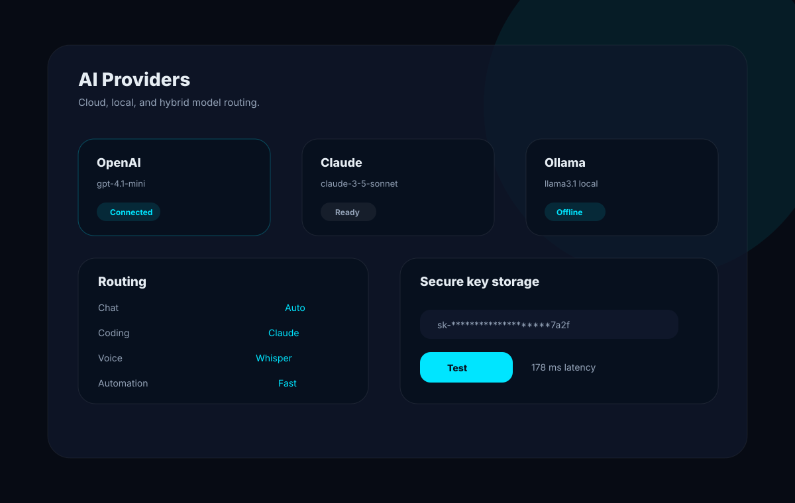

AI providers
JX Jarvis uses a unified provider layer so the app can switch between cloud AI, local AI, and hybrid failover without duplicating chat logic.

Supported providers
| Provider | Purpose | Key |
|---|---|---|
| Groq | Fast cloud inference. | GROQ_API_KEY |
| OpenAI | General chat, coding, and vision-capable models. | OPENAI_API_KEY |
| Claude | Long-form reasoning and writing workflows. | ANTHROPIC_API_KEY |
| Gemini | Google model support. | GEMINI_API_KEY |
| OpenRouter | Access many hosted models through one API. | OPENROUTER_API_KEY |
| Ollama | Offline local chat models. | No key |
| llama.cpp | OpenAI-compatible local server. | No key |
| Local Whisper | Offline speech transcription. | No key |
Key management
Keys entered from Settings -> AI Providers are sent to the backend and encrypted locally. The frontend receives only connected status and masked key information. Raw keys are never returned to the browser UI.
Model routing
Jarvis routes different task types independently: chat, coding, vision, voice, and automation. Each route can be set to a specific provider or left on Auto.
Offline and hybrid modes
Offline mode prioritizes Ollama and llama.cpp. Hybrid failover allows Jarvis to try local models when a cloud provider fails, or fall back to another configured cloud provider.
Testing providers
The Test Connection button sends a minimal request and reports success, latency, or the real provider error. Local Whisper reports missing dependencies instead of pretending transcription is ready.
Ollama setup
ollama pull llama3.1
ollama serveCreated by Jojin John
JX Jarvis is created by Jojin John.